측량및지형공간정보산업기사 (2004-09-05 기출문제)
1과목: 응용측량
1. 지상 9km2의 면적을 지도상에서 36cm2으로 표시하기 위해서는 어느 축척을 사용해야 하는가?
- 1/30000
- 1/40000
- 1/50000
- 1/60000
(정답률: 알수없음)

2. △ABC에서 ㉮, ㉯, ㉰의 면적의 비를 각각 4 : 3 : 2로 분할할 때 EC의 길이는?
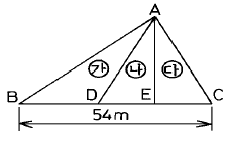
- 10.8m
- 12.0m
- 16.2m
- 18.0m
(정답률: 알수없음)
3. 노선의 종단 경사가 크게 변화하는 곳에 차량이 주행할 때 충격 완화와 충분한 시거 확보를 위하여 설치하여야 하는 곡선은?
- 수평곡선
- 반향곡선
- 종곡선
- 복곡선
(정답률: 알수없음)
4. 접선장이 60m, 교각이 60° 인 원곡선의 곡선 반경(R)은?
- 103.92m
- 130.92m
- 193.02m
- 203.92m
(정답률: 알수없음)
5. 다음 중 유량을 측정할 때 장소 선정에 대한 설명으로 옳지 않은 것은?
- 작업하기 쉽고 하저의 변화가 없는 곳
- 유선이 직선이고 균일한 단면으로 되어 있는 곳
- 잠류, 역류가 없고 유수의 상태가 균일한 곳
- 상, 하류 횡단면의 형상이 차이가 있는 곳
(정답률: 알수없음)
6. 하천의 횡단면 연직선 내의 평균유속을 1점법을 사용하여 구하고자 할 때 관측하여야 할 속도(V)는?
- 수면에서 수심의 20% 되는 지점의 유속(V0.2)
- 수면에서 수심의 60% 되는 지점의 유속(V0.6)
- 수면에서 수심의 80% 되는 지점의 유속(V0.8)
- 수면에서 수심의 20%와 80%되는 지점의 유속의 평균
(정답률: 알수없음)
7. 다음 그림과 같이 하천의 BC선에 연하여 심천측량을 행하였다. A점을 BC에 직각으로 AB=96.00m로 정하고 선상 P점에서 측정한 ∠APB값이 43° 40´ 일 때 BP의 거리는?
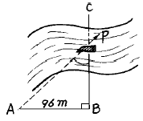
- 91.6m
- 139.0m
- 100.6m
- 1⑤.5m
(정답률: 알수없음)
8. 하천의 수면구배를 정하기 위해 200m 간격으로 동시 수위를 측정하여 다음 결과를 얻었다. 이 결과로 구간 1∼5의 평균 수면구배를 구하면?
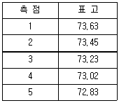
- 1/1250
- 1/900
- 1/1000
- 1/2000
(정답률: 알수없음)
9. 양수표에 대한 설명으로 잘못된 것은?
- 양수표의 영위는 최저수위 보다도 하위에 있어야 한다.
- 양수표 눈금의 최고위는 최대 홍수위 보다도 높게 해야 한다.
- 양수표의 표고는 그 하천 하류부의 가장 낮은 곳을 높이의 기준으로 정한다.
- 홍수후에는 부근 수준점과 연결하여 그 표고를 확인해야 한다.
(정답률: 알수없음)
10. 갱내 천정 B에 수준점을 측설하기 위하여 갱내 고저측량 을 실시하였다. B점의 지반고는? (단, A점의 지반고는 87.216m임)
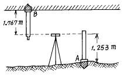
- 84.196m
- 86.702m
- 87.730m
- 90.236m
(정답률: 알수없음)
11. 클로소이드 곡선의 매개변수(A)를 2배 늘리면 곡선 반경 (R)이 같을 때 완화 곡선길이(L)는 몇 배가 되는가?
- 1
- 2
- 4
- 8
(정답률: 알수없음)
12. 터널 양 입구의 좌표가 A(300m,300m), B(400m,400m)이며 표고차가 6m라면 터널의 경사거리는?
- 141.55m
- 124.26m
- 100.18m
- 141.42m
(정답률: 알수없음)
13. 다음 중 경관분석의 기초인자와 가장 거리가 먼 것은?
- 식생 상태와 기상과의 관계
- 대상의 시각 속성
- 시점과 대상과의 관계
- 인간의 시.지각 특성
(정답률: 알수없음)
14. 원곡선 설치에서 곡선반경 R=250m, 교각 I=65° , 곡선시점(B.C)의 위치가 No. 245+09.450m일 경우 곡선종점의 위치는 얼마인가? (단, 중심말뚝 간격은 20m이다.)
- No.251+13.066
- No.259+06.034m
- No.245+13.066
- No.259+13.066m
(정답률: 알수없음)
15. 다음 중 시설물경관평가의 평가지표로서 가장 거리가 먼것은?
- 풍수지리 관념
- 식별도(識別度)
- 위압감(威壓感)
- 가시(可視) · 불가시(不可視)
(정답률: 알수없음)
16. 하나의 터널을 완성하기 위해서는 계획· 설계· 시공 등의 작업과정을 거쳐야 한다. 다음 중 터널의 시공과정 중에 주로 이루어지는 측량은?
- 지형측량
- 갱외기준점 측량
- 세부측량
- 갱내측량
(정답률: 알수없음)
17. 도로 곡선 설치에서 수평곡선 중 완화곡선으로 사용되지 않는 것은?
- 클로소이드 곡선
- 렘니스케이트 곡선
- 3차 포물선
- 2차 포물선
(정답률: 알수없음)
18. 누가토량을 곡선으로 표시한 것을 유토곡선(mass curve)라고 한다. "유토곡선에서 하향구간은 (A)구간이고 상향 구간은 (B)구간을 나타낸다."에서 (A), (B)가 알맞게 짝지어진 것은?
- A : 성토, B : 절토
- A : 절토, B : 성토
- A : 성토와 절토의 교차, B : 절토
- A : 성토와 절토의 교차, B : 성토
(정답률: 알수없음)
19. 댐을 축조하기 위한 조사계획 단계의 측량과 거리가 먼것은?
- 수문자료조사를 위한 측량
- 지형, 지질조사를 위한 측량
- 유지관리조사를 위한 측량
- 보상조사를 위한 측량
(정답률: 알수없음)
20. 지하시설물 탐사작업의 순서로 바른 것은?
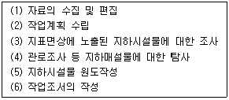
- (2)-(1)-(3)-(4)-(5)-(6)
- (1)-(5)-(3)-(4)-(2)-(6)
- (2)-(1)-(4)-(5)-(3)-(6)
- (1)-(3)-(4)-(2)-(6)-(5)
(정답률: 알수없음)
2과목: 사진측량 및 원격탐사
21. GIS를 구성하는 4가지 주요 요소와 가장 거리가 먼 것은?
- 공간데이터베이스(자료)
- 하드웨어
- 인적자원(조직과 인력)
- 인터넷
(정답률: 알수없음)
22. 벡터형 데이터와 래스터형 데이터(격자 데이터)에 관한 설명으로 옳은 것은?
- 벡터형은 레스터형에 비하여 자료구조가 단순하다.
- 래스터형은 점, 선, 면으로, 벡터형은 셀(cell)로 도형을 표현한다.
- 벡터형의 정밀도는 메쉬 간격에 의존한다.
- 래스터형 데이터는 원격탐사 데이터와의 중첩이 용이하다.
(정답률: 알수없음)
23. 다음 중 GIS의 구축을 위한 과정을 순서대로 바르게 열거한 것은?
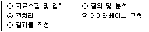
- ㉢-㉠-㉣-㉡-㉤
- ㉠-㉢-㉣-㉤-㉡
- ㉠-㉢-㉣-㉡-㉤
- ㉢-㉣-㉠-㉡-㉤
(정답률: 알수없음)
24. 촬영고도 5000m에서 촬영한 입체사진에서 사진(1)의 주점기선장이 60mm, 사진(2)의 주점기선장이 62mm일 때 시차차 1.6mm의 그림자의 고저차는?
- 118.5m
- 125.1m
- 131.1m
- 150.5m
(정답률: 알수없음)
25. 촬영고도 2500m인 비행기에서 표고 200m에 위치한 길이 400m인 교량을 촬영할 때 사진에서 이 교량의 길이는? (단, 렌즈의 초점거리는 15cm)
- 2.1cm
- 2.3cm
- 2.6cm
- 3.1cm
(정답률: 알수없음)
26. 지리정보시스템(GIS)에 대한 설명 중 맞지 않는 것은?
- 지리정보의 전산화 도구
- 고품질의 공간정보 획득 도구
- 합리적인 공간의사결정을 위한 도구
- CAD 및 그래픽 전용 도구
(정답률: 알수없음)
27. GIS사업을 수행하기 위하여 공간정보데이터베이스를 구축할 경우 보기의 내용을 참조하여 일반적인 순서를 맞게 나열한 것은?
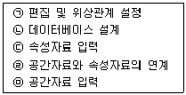
- ㉡-㉤-㉠-㉢-㉣
- ㉤-㉠-㉢-㉣-㉡
- ㉡-㉣-㉤-㉠-㉢
- ㉡-㉤-㉢-㉣-㉠
(정답률: 알수없음)
28. 항공사진의 투영방법은 어느 것인가?
- 중심투영이다.
- 정사투영이다.
- 방사투영이다.
- 평행투영이다.
(정답률: 알수없음)
29. 항공사진을 이용한 지형도 제작을 크게 3단계로 구분할 때 순서대로 알맞게 나열된 것은?
- 촬영→ 기준점측량→ 세부도화
- 세부도화→ 촬영→ 기준점측량
- 세부도화→ 기준점측량→ 촬영
- 촬영→ 세부도화→ 기준점측량
(정답률: 알수없음)
30. 초점거리 15cm, 화면의 크기 23×23cm, 중복도는 60%, 축척은 1/10000일 때 사진촬영의 기선고도비는?
- 1.00
- 0.61
- 0.67
- 2.61
(정답률: 알수없음)
31. 항공사진의 축척에 대한 설명으로 옳은 것은?
- 촬영카메라의 초점거리에 비례하고 비행고도에 반비례한다.
- 촬영카메라의 초점거리에 반비례하고 비행고도에 비례한다.
- 촬영카메라의 초점거리와 비행고도에 모두 비례한다.
- 촬영카메라의 초점거리의 제곱에 비례한다.
(정답률: 알수없음)
32. 사진측량의 특성에서 항공사진의 특수 3점에 속하지 않는 것은?
- 연직점(鉛直点)
- 표정점(標定点)
- 주점(主点)
- 등각점(等角点)
(정답률: 알수없음)
33. 3차원 공간 위에 세 점으로 정의한 삼각형의 조합에 의하여 지표면을 표현하는 방식은?
- 불규칙삼각망(TIN)방식
- 격자(Grid)방식
- 임의점추출(Randam point)방식
- 등고선(Contour line)방식
(정답률: 알수없음)
34. 편위수정에 있어서 만족시켜야 할 조건이 아닌 것은?
- 포로-코페의 조건
- 뉴톤의 렌즈 조건
- 소실점의 조건
- 샤임플러그의 조건
(정답률: 알수없음)
35. 항공사진의 기복변위에 대한 설명으로 옳은 것은?
- 기복변위는 정사투영에 의해 발생한다.
- 변위량은 촬영고도에 반비례한다.
- 변위량은 지형지물의 비고에 반비례한다.
- 변위량은 사진주점에서 상이 생기는 거리에 반비례한다.
(정답률: 알수없음)
36. 대지표정에 최소한 소요되는 기준점의 수는?
- 3점의 (X,Y)좌표 및 2점의 (Z)좌표
- 3점의 (X,Y,Z)좌표
- 2점의 (X,Y,Z)좌표 및 1점의 (Z)좌표
- 2점의 (X,Y,Z)좌표 및 2점의 (Z)좌표
(정답률: 알수없음)
37. 기계적 표정 중 종시차(y-parallax)를 소거하여 입체시되도록 하는 작업으로 완료 후 3차원 입체 모델 좌표를 얻을 수 있는 작업은?
- 접합표정
- 내부표정
- 대지표정
- 상호표정
(정답률: 알수없음)
38. 축척 1/20000의 항공사진을 C계수가 1200인 도화기로써 도화할 때 신뢰할 수 있는 최소 등고선의 간격은? (단, 초점거리는 150㎜ 이다.)
- 2.5m
- 3.5m
- 8.3m
- 16.7m
(정답률: 알수없음)
39. 사진크기 23㎝×23㎝인 항공사진에서 주점기선장이 10.5㎝라면 인접사진과의 중복도는 얼마인가?
- 50%
- 54%
- 58%
- 62%
(정답률: 알수없음)
40. 다음 중 상호표정 요소가 아닌 것은?
- ψ
- bx
- by
- bz
(정답률: 알수없음)
3과목: GIS 및 GPS
41. 다음 그림과 같이 측량을 하였다. 계획고를 0m로 할 때 전체 절토량은?
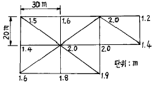
- 5260m3
- 5360m3
- 5365m3
- 5630m3
(정답률: 알수없음)
42. A점에서 B점 방향을 관측할 경우 측표가 그림과 같이 B′ 점에 편심되어 있을 때 보정량(θ)은? (단, ø =120° , e=0.10m, S=1㎞)
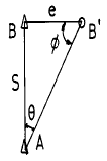
- 2"
- 9"
- 18"
- 24"
(정답률: 알수없음)
43. 두점의 거리 관측을 A, B, C 세사람이 실시하여 A는 4회 관측치의 평균이 120.58m 이고, B는 2회 관측치의 평균이 120.51m, C는 7회 관측치의 평균이 120.62m이라면 이 거리의 최확치는?
- 120.56m
- 120.67m
- 120.54m
- 120.59m
(정답률: 알수없음)
44. 트래버스측량에서 정확도가 가장 좋은 방법은?
- 결합트래버스
- 개방트래버스
- 폐합트래버스
- 모두 동일
(정답률: 알수없음)
45. 직경이 1000km인 행성에서 구면삼각형 면적 20km2 에 대한 구과량(ε)은 얼마인가?
- 16.5″
- 20.6″
- 24.8″
- 4.1″
(정답률: 알수없음)
46. 인공위성을 이용한 측량방법으로서 최근 측량, 자동항법 등의 분야에 적용되는 점 좌표관측 방법은 무엇인가?
- GIS
- GPS
- RS(Remote Sensing)
- Tellurometer
(정답률: 알수없음)
47. 1/50000 지형도에서 주곡선 간격 20m를 도면상에서 0.25mm 간격으로 나타낼 경우 이 지형의 경사각은?
- 29°
- 33°
- 58°
- 63°
(정답률: 알수없음)
48. 1회 측정에서 ± 3mm의 우연오차가 발생하였을 때 20회 측정시의 우연오차는?
- ± 1.34mm
- ± 13.4mm
- ± 47.3mm
- ± 134mm
(정답률: 알수없음)
49. 표준척보다 36mm가 짧은 30m 줄자로 측정한 거리가 480m일 때 실제거리는?
- 479.424m
- 479.856m
- 480.144m
- 480.576m
(정답률: 알수없음)
50. 다음 중 지리정보시스템에 이용되는 GIS 소프트웨어의 모듈기능이 아닌 것은?
- 자료의 입력과 확인
- 자료의 저장과 데이터베이스 관리
- 자료의 출력
- 자료를 전송하기 위한 전화선으로 구성된 네트워크 시스템
(정답률: 알수없음)
51. 다음 삼각망 중에서 조건식의 수가 가장 많으며 정확도가 가장 높은 것은?
- 사변형망
- 단열삼각망
- 유심다각망
- 육각형망
(정답률: 알수없음)
52. 트래버스측량에서 전 측선의 길이가 1100m이고 위거오차가 +0.23m, 경거오차가 -0.35m일 때 폐합비는?
- 약 1/4200
- 약 1/3200
- 약 1/2600
- 약 1/1400
(정답률: 알수없음)
53. 다음 그림과 같이 토지의 한변 BC에 평행하게 면적을 m:n=1:3으로 분할할 때 AX의 길이는? (단, AB=40m임)
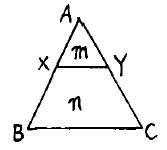
- 10m
- 15m
- 20m
- 25m
(정답률: 알수없음)
54. 다음 설명 중 틀린 것은?
- 자료의 입력은 기존 지도와 야외조사자료, 인공위성을 통해 얻은 정보 등을 수치형태로 입력하거나 변환하는 것을 말한다.
- 자료의 출력은 자료를 보여주고 분석결과를 사용자에게 알려주는 것을 말한다.
- 자료변환은 지형, 지물과 관련된 사항을 현지에서 직접조사하는 것을 말한다.
- 자료의 저장과 데이터베이스 관리에서는 지표상의 위치, 연결성, 지리적 속성에 대한 정보를 구성화하고 조직화하는 방법이 중요한 과제이다.
(정답률: 알수없음)
55. 지구상의 한점에서 지오이드에 대한 연직선이 적도면과 이루는 각으로 지오이드를 기준으로 한 위도는?
- 지심위도
- 화성위도
- 측지위도
- 천문위도
(정답률: 30%)
56. 그림과 같은 지형을 교호수준 측량하여 다음과 같은 결과를 얻었다. A점의 표고가 60.235m일 때 B점의 표고는? (단, a1=1.876m, b1=0.896m, a2=0.980m, b2=0.435m, )
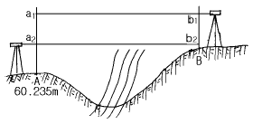
- 61.566m
- 61.325m
- 60.998m
- 60.650m
(정답률: 알수없음)
57. 방위각이 156° 25' 45"일 때 역방위는?
- N 23° 34' 15"W
- N 23° 34' 15"E
- S 23° 34' 15"W
- S 23° 34' 15"E
(정답률: 알수없음)
58. 축척1/25000 지형도 상에서 실제거리 4km인 기선의 도상거리는?
- 16cm
- 18cm
- 20cm
- 24cm
(정답률: 알수없음)
59. 수평표척 사용시 협장 ℓ = 1m이고 수평각 α = 20° 일 때 수평 거리는?
- 2.84m
- 28.4m
- 3.26m
- 32.6m
(정답률: 알수없음)
60. 다음은 래스터자료에 대한 특징을 설명한 것이다. 틀린것은?
- 자료구조가 간단하다.
- 다양한 공간분석을 할 수 있다.
- 원격탐사 자료와 연결시키기가 쉽다.
- 그래픽 자료의 양이 적다.
(정답률: 알수없음)
4과목: 측량학
61. 국토지리정보원장이 간행하는 지도의 축척이 아닌 것은?
- 1/2500
- 1/15000
- 1/25000
- 1/5000
(정답률: 알수없음)
62. 공공측량에 관한 다음 설명중 옳은 것은?
- 국토지리정보원장이 계획, 실시하는 측량이다.
- 모든 측량의 기초가 되는 측량이다.
- 기본측량외의 측량중 국가· 지방자치단체 등의 기관이 실시하는 측량을 말한다.
- 일반측량의 측량성과를 기초로하여 실시하여야 한다.
(정답률: 알수없음)
63. 기본측량실시로 인한 손실보상의 협의 대상자는?
- 건설교통부장관과 국토지리정보원장
- 국토지리정보원장과 손실을 받은자
- 측량계획기관과 국토지리정보원장
- 손실을 받은자와 측량계획기관
(정답률: 알수없음)
64. 측량업의 등록신청시의 신청 서류가 아닌 것은?
- 신청인의 경력증명서
- 기술능력을 갖춘 사실을 증명하는 서류
- 장비를 갖춘 사실을 증명하는 서류
- 법인인 경우에는 등기부 등본
(정답률: 알수없음)
65. 우리나라 수준원점의 위치는?
- 부산
- 목포
- 수원
- 인천
(정답률: 알수없음)
66. 건설교통부장관이 측량업의 등록을 반드시 취소해야 하는 사유에 해당되지 않는 것은?
- 최근 2년간 영업실적의 년 평균금액이 대통령령이 정하는 금액에 미달한 때
- 다른 사람에게 자기의 등록증 또는 등록수첩을 대여한 때
- 영업의 정지처분에 위반한 때
- 허위 기타 부정한 방법으로 측량업 등록을 한 때
(정답률: 알수없음)
67. 다음중 임시설치 표지는?
- 도근점표석(圖根點標石)
- 표기(標旗)
- 측량표지막대
- 기선표석(基線標石)
(정답률: 알수없음)
68. 기본측량 성과의 고시에 포함되어야 하는 사항중 옳지 않은 것은?
- 측량의 종류, 정확도
- 임시로 설치한 측량표의 수
- 측량실시의 시기 및 지역
- 측량성과의 보관장소
(정답률: 알수없음)
69. 1:5,000지형도 도식적용규정 상에서 도로의 실폭을 축척화 하여 표현할 수 있는 도로의 폭원을 규정하고 있다. 맞는 것은?
- 2.5m 이상
- 3.0m 이상
- 3.5m 이상
- 4.0m 이상
(정답률: 알수없음)
70. 다음 측량법상 용어의 정의 설명 중 틀린 것은?
- 측량업자라 함은 측량법의 규정에 따라 등록하여 측량업을 영위하는 자를 말한다.
- 발주자라 함은 측량용역을 측량업자에게 도급주는 자를 말하며, 수급인으로서 도급받은 측량용역을 하도급 주는자는 제외한다.
- 측량업이라 함은 기본측량, 공공측량 또는 일반측량의 용역을 도급받는 영업을 말한다.
- 측량이라 함은 토지 및 연안해역의 측량을 말하며, 측량용 사진의 촬영은 제외한다.
(정답률: 알수없음)
71. 지형도 도식적용규정과 관련이 없는 내용은?
- 지형,지물등의 표시방법
- 각종 기호의 적용방법
- 기호 및 주기의 선택
- 기준점 위치의 측량 방법
(정답률: 30%)
72. 국토지리정보원장이 행하는 지도등의 심사 사항이 아닌것은?
- 도곽설정.축척 및 투영에 관한 사항
- 측량업용 시설 및 장비에 관한 사항
- 지형, 지물 및 지명의 표시에 관한 사항
- 주기 및 기호 표시에 관한 사항
(정답률: 알수없음)
73. 측량업 등록을 한 자가 상호를 변경할 때에는 그 변경이 있은 날로 부터 며칠 이내에 변경 등록을 해야 하는가?
- 10일
- 20일
- 30일
- 60일
(정답률: 알수없음)
74. 기본측량에 관한 다음의 설명중 틀린 것은?
- 기본측량에 종사하는 자가 일시표지를 설치하기 위하여 필요한 때에는 미리 그 소유자 또는 점유자에게 통지하여 토지 등을 일시 사용할 수 있다.
- 기본측량에 종사하는 자는 측량의 실시를 위하여 필요하다고 인정하는 경우에는 미리 그 소유자 또는 점유자의 승낙을 받아 장해가 되는 식물을 제거할 수있다.
- 타인의 토지나 건물에 출입하고자 하는 자는 그 권한을 표시하는 증표를 지니고 관계인에게 이를 내보여야 한다.
- 건설교통부장관은 기본측량을 실시하기 위하여 필요하다고 인정하는 경우에는 토지· 건물· 죽목 기타 공작물을 수용하거나 사용할 수 있다.
(정답률: 알수없음)
75. 건설교통부장관 또는 국토지리정보원장으로 부터 측량협회에 위탁된 업무에 관한 수수료 납부 방법으로 옳은 것은?
- 현금 또는 수입인지로 납부하여야 한다.
- 수입인지 또는 수입증지로 납부하여야 한다.
- 신청사항에 따라 다르다.
- 현금으로 납부하여야 한다.
(정답률: 알수없음)
76. 측량의 기준에서 지리학적 경위도와 평균해면으로부터의 높이로 표시해야 할 것은?
- 위치
- 거리와 면적
- 측량의 원점
- 지구의 형상과 크기
(정답률: 알수없음)
77. 성능검사를 받아야 하는 측량 기기의 성능검사주기는 몇년인가?
- 1년
- 2년
- 3년
- 4년
(정답률: 알수없음)
78. 다음 중 측량업 등록을 할 수 있는 사람은?
- 금치산의 선고를 받은 자
- 파산자로서 복권되지 아니한 자
- 형의 집행 유예의 기간중에 있는자
- 측량업 등록이 취소된 후 3년이 경과된 자
(정답률: 알수없음)
79. 정당한 사유없이 측량의 실시를 방해한 자의 벌칙으로 맞는 것은?
- 2년 이하의 징역 또는 500만원 이하의 벌금
- 1년 이하의 징역 또는 300만원 이하의 벌금
- 200만원 이하의 벌금
- 200만원 이하의 과태료
(정답률: 0%)
80. 지도도식에서 지물의 실제현상 또는 상징물의 표현은 무엇으로 하는가?
- 선 또는 기호
- 숫자
- 문자
- 주기
(정답률: 알수없음)
면적의 축척 = (길이의 축척)2
지상 9km2를 36cm2로 표시하려면,
(길이의 축척)2 = (9km2 / 36cm2)
길이의 축척 = √(9km2 / 36cm2)
길이의 축척 = (3km / 6cm)
길이의 축척 = 1/50000
따라서, 정답은 "1/50000" 이다.